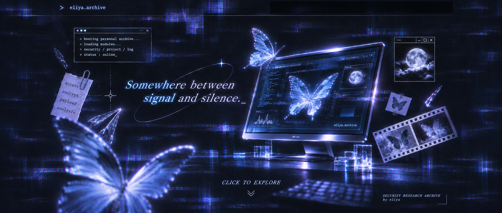

[ ARCHIVE ]
[ ABOUT ]
> e1iya.archive
[ HOME ]
[ ARCHIVE ]
[ ABOUT ]
Fragments of the unknown_
ARCHIVE ONLINE / 000 RECORDS
FILES
ARCHIVE
LOG
ARCHIVE / RECENT ENTRIES
✧
/archive/
RECORD INDEX
NEWEST
OLDEST
TITLE
LOAD MORE RECORDS ↓
identity_e1iya.sys
×